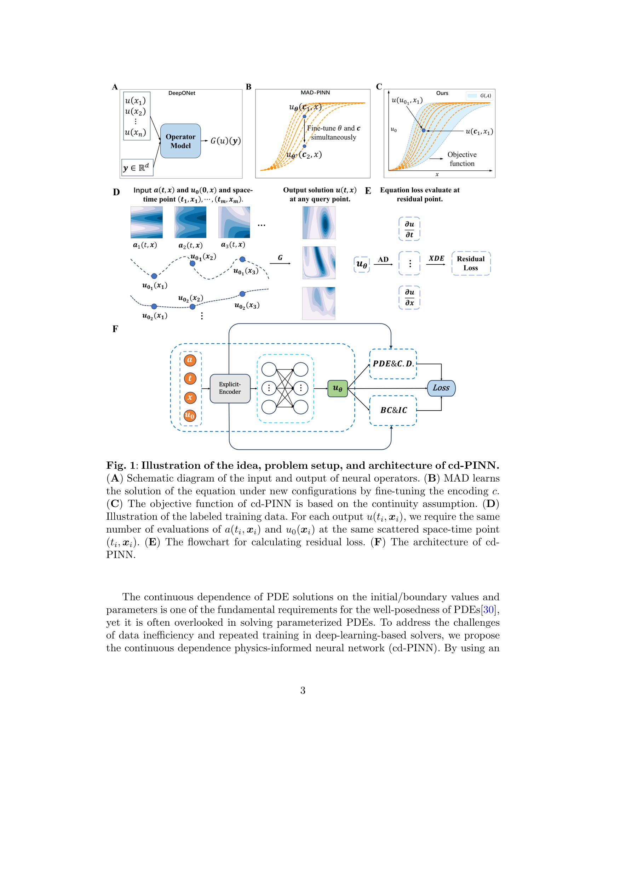

저자: Guojie Li, Wuyue Yang, Liu Hong | 날짜: 2026-03-26 | DOI: — | arXiv: 2603.25122

Figure 1
기존 PINN의 핵심 약점인 낮은 일반화 성능 문제를, PDE의 수학적 적분성(well-posedness)에서 보장되는 해의 연속 의존성(continuous dependence) 정보를 학습에 추가 반영함으로써 해결한다. 이 확장은 PINN이 단순한 PDE 솔버에서 나아가 operator learning 수준의 일반화 능력을 갖추도록 하며, PDE 해의 수학적 구조를 훈련 제약으로 활용하는 새로운 패러다임을 제시한다.
Figure 1
Figure 1: 연속 의존성 조건을 통합한 확장 PINN 프레임워크 — 초기·경계 조건 변화에 대한 해의 민감도를 손실 함수에 반영하는 구조
총평: PDE well-posedness의 수학적 구조를 PINN 훈련 제약으로 활용하는 아이디어는 이론적으로 우아하며, 일반화 성능 향상을 통해 PINN을 operator learning 수준으로 격상시키는 실질적 기여를 한다.